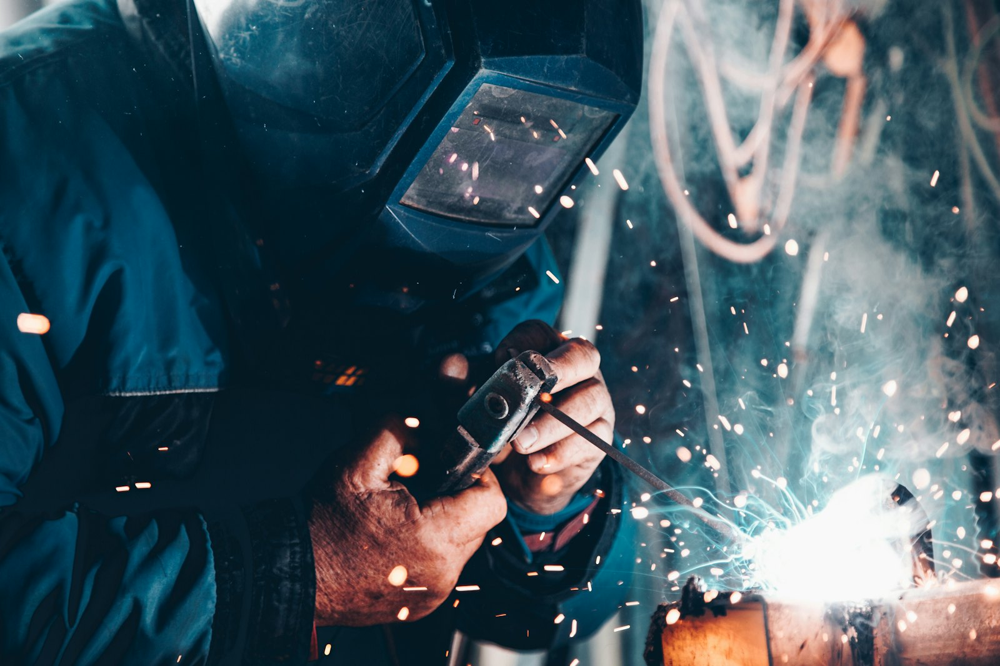

Reverse osmosis systems,
built to a higher standard.
From 500 LPH commercial skids to containerised seawater desalination, every PUREVER system is built on a stainless steel frame, fitted with high-rejection membranes and pressure-tested before it leaves our facility. It ships complete with commissioning, operator training and long-term service support.

SCROLL · ZOOM
RIGHT-DRAG · PAN
CLICK · INSPECT
Choose the right platform.
Every platform can be customised: membrane type, pre-treatment, materials of construction, control philosophy and voltage. These are standard configurations.
| PV-C 500COMMERCIAL | PV-C 1000COMMERCIAL | PV-C 2000INDUSTRIAL | PV-SWRO 100CONTAINERISED | |
|---|---|---|---|---|
| Permeate capacity | 500 L/h | 1,000 L/h | 2,000 L/h | 100 m³/day |
| Feed water | Mains / borehole | Mains / borehole | Brackish ≤ 5,000 mg/L | Seawater ≤ 45,000 mg/L |
| Membranes | 2 × BW-4040 | 3 × BW-4040 | 3 × BW-8040 | 4 × SW-8040 |
| Recovery | 50–65% | 55–70% | 65–75% | 40–45% |
| Pre-treatment | PP + CTO cartridges | PP + CTO cartridges | SS cartridge housing | MMF + cartridge + dosing |
| High-pressure pump | 1.1 kW | 2.2 kW | 4.0 kW + VFD | 11 kW + VFD + ERD |
| Disinfection | Optional UV | UV 6 GPM | UV 12 GPM | UV + remineralisation |
| Control | PLC, 4.3" HMI | PLC, 7" HMI | PLC, 10" HMI | PLC + SCADA + 4G |
| Footprint | 1.2 × 0.65 × 1.6 m | 1.5 × 0.7 × 1.7 m | 1.9 × 0.85 × 1.9 m | 20' ISO container |
| View in 3D → | View in 3D → | View in 3D → | View in 3D → |
Inside every PUREVER RO.
Five engineered stages, each one protecting the next. Try the process simulator →
Pre-filtration
Sediment and carbon cartridges, or media filters, remove particles and chlorine.
Pressurisation
A multistage pump raises the feed above its osmotic pressure.
Membrane separation
Spiral-wound polyamide elements reject 99%+ of dissolved salts.
Disinfection
UV inactivates microorganisms in the permeate before storage.
Control & monitoring
PLC automation, flushing, alarms and remote telemetry.

Fabricated to last decades, not seasons.
Frames are TIG-welded and electropolished SS304/316. High-pressure manifolds use orbital welds and grooved couplings. Every skid is hydrostatically tested, then run on water at our facility, and it ships with its test record, P&ID and O&M manual.
- Factory acceptance test (FAT) witnessed on request
- Materials certificates and weld traceability
- Spare parts kits for 2 years of operation
Ready to engineer your water?
Send us your water analysis and the capacity you need. A PUREVER application engineer will reply within one business day with a preliminary design and budget.